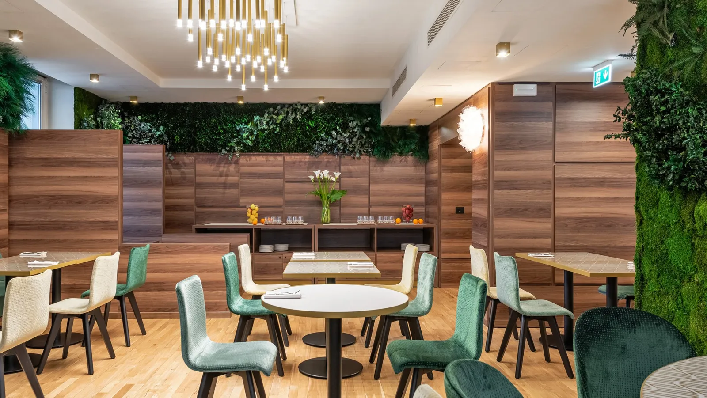
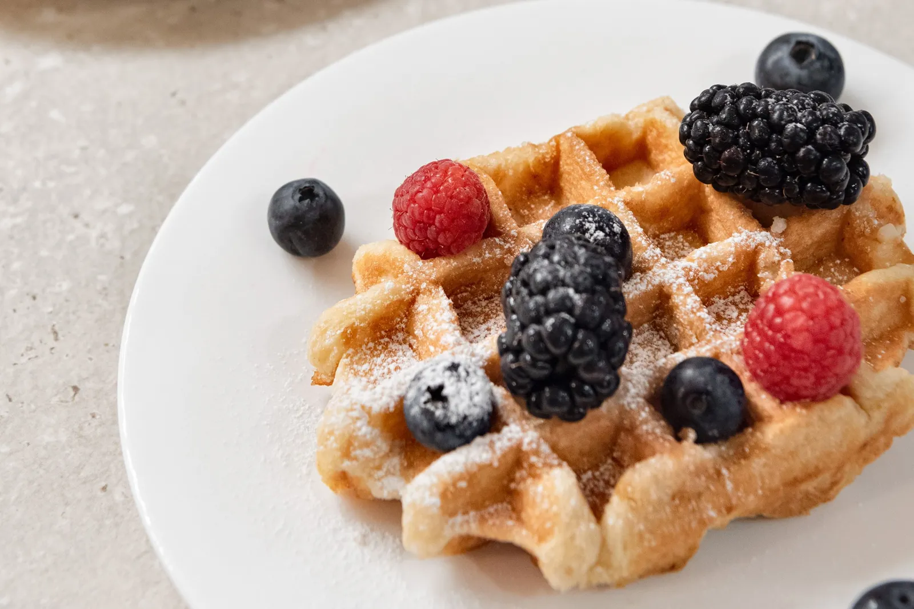
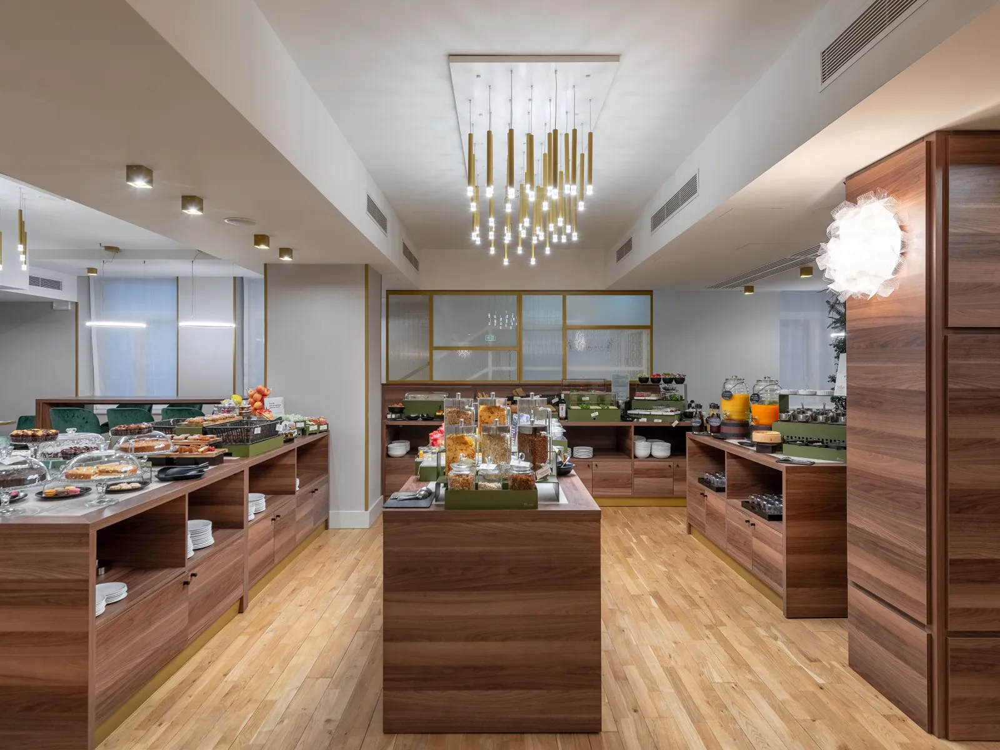
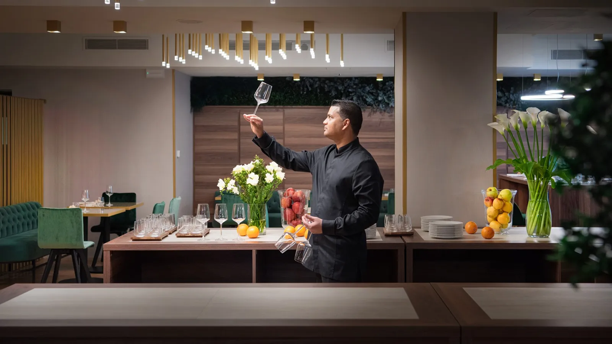
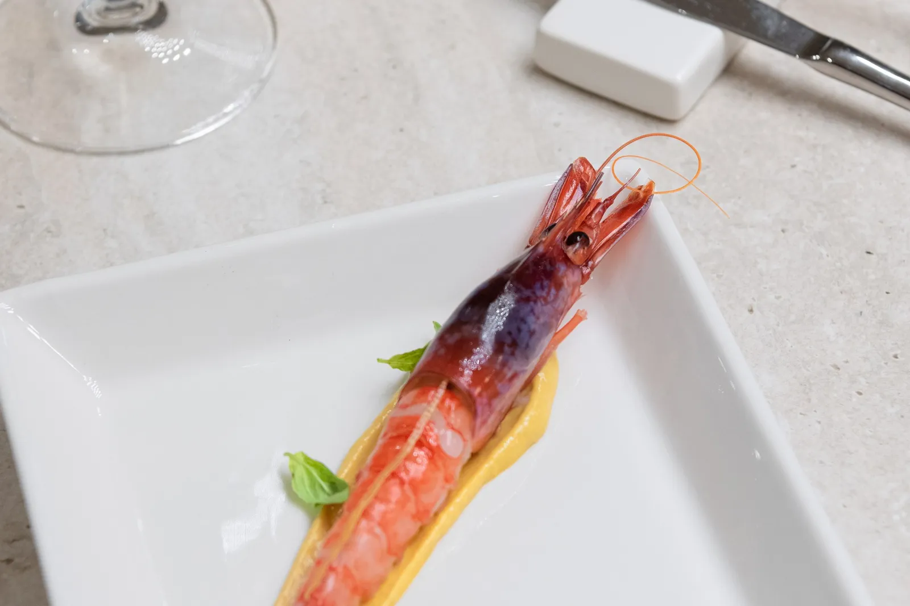
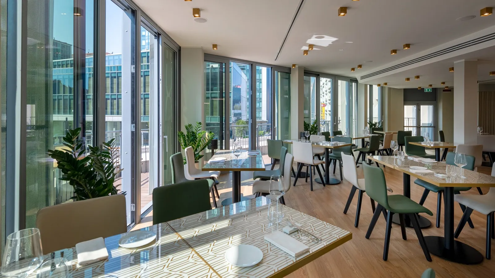

Ristorante e colazione al Tocq Hotel Milano
Si mangia bene, a ogni ora.
Colazione dalle 6:30, pranzo a buffet, aperitivo e cena al Clorofilla. Aperto anche a chi non dorme qui.

Colazione
Dolce, salata, da tutto il mondo.
Italiana, americana con uova e bacon, leggera con yogurt e centrifugati. Se parti presto, te la prepariamo da portare via.
- Lun–ven
- 06:30–10:30
- Sab, dom, festivi
- 07:00–11:00
- Da asporto
- Dalle 05:30, alla reception
- In camera
- Su richiesta, alla reception o quando prenoti
- Per tutti
- Halal, asiatica, senza glutine e vegana
- Ospiti esterni
- 16 €





Pranzo
Pranzo veloce, ma buono.
Buffet con poke in chiave mediterranea, verdure di stagione, carne, pesce e formaggi, più i piatti del giorno. Fra una riunione e l'altra.
Orari del pranzo: da confermare
Clorofilla · dalle 18:30 alle 23:00
Aperitivo e cena, senza uscire.
Wine bar con cucina: piatti di stagione, tradizione italiana con un tocco internazionale. Dall'aperitivo al dopocena.





Domande frequenti
Sul mangiare.
Per un tavolo o una richiesta speciale, la reception risponde 24 ore su 24: +39 02 62071.